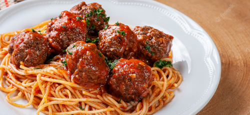
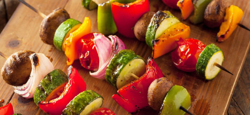
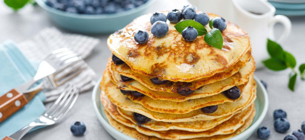

Aqui estão nossas receitas veganas favoritas
Macarrão com Cogumelo e Almôndega Incrível
Essa receita vai te deixar água na boca! Perfeita para os almoço em um domingo com a família, o Macarrão com Cogumelo e Almôndega Incrível.
Espetinho Vegano
O Espetinho Vegano é uma ótima pedida para quem quer uma comida vegana no churrasco. A receita é bem simples e rica em nutrientes.
Panqueca Vegana
A receita de Panqueca vegana é uma super ideia para um almoço diferente e muito saboroso.
